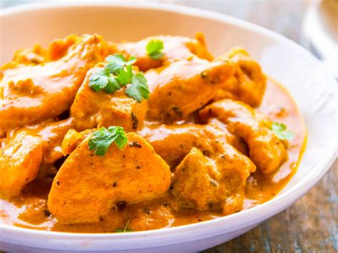

Pollo al Curry

Ingredientes:
- 4 pechugas de pollo sin piel
- 2 cebollas grandes
- 2 dientes de ajo
- 2 cucharadas de jengibre fresco rallado
- 2 cucharadas de aceite vegetal
- 2 cucharadas de curry en polvo
- 1 cucharadita de comino en polvo
- 1 cucharadita de cilantro en polvo
- 1 lata (400 ml) de leche de coco
- Sal al gusto
- Pimienta negra al gusto
- Cilantro fresco picado para decorar
- Arroz blanco cocido para acompañar
Tiempos:
- Preparación:20 minutos
- Cocina: 3 horas
- Total: 3:20 horas
Pasos:
- Cortar el pollo en trozos pequeños y salpimentar.
- Pelar y picar finamente la cebolla y el ajo.
- Calentar el aceite en una sartén grande a fuego medio y añadir la cebolla, el ajo y el jengibre rallado. Cocinar durante unos 5 minutos hasta que estén dorados y suaves.
- Añadir las especias (curry, comino y cilantro en polvo) y cocinar durante otros 2-3 minutos, revolviendo constantemente.
- Añadir el pollo a la sartén y mezclar bien con las especias y la cebolla. Cocinar durante unos 5 minutos hasta que esté dorado por todos los lados.
- Añadir la leche de coco y mezclar bien. Llevar a ebullición y luego reducir el fuego y cocinar a fuego lento durante unos 15-20 minutos, o hasta que el pollo esté bien cocido.
- Servir caliente con arroz blanco cocido y decorar con cilantro fresco picado.